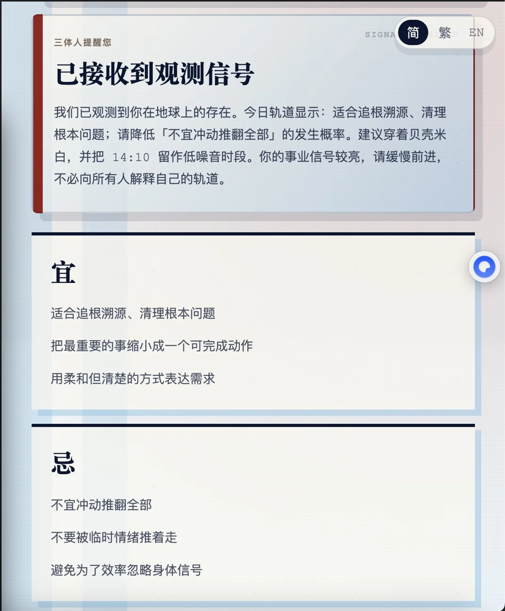

梁雨晗 Hanna Liang
我叫梁雨晗。我关注民族与在地文化，也做互动叙事和游戏。现在我最想做的是，让人能沿着一个故事走进去，慢慢看懂一种文化里的生活。
我叫梁雨晗。我关注民族与在地文化，也做互动叙事和游戏。现在我最想做的是，让人能沿着一个故事走进去，慢慢看懂一种文化里的生活。
你好，我是梁雨晗，也可以叫我 Hanna。我研究生读的是香港浸会大学文化创意写作专业。我关心民族文化和在地文化，尤其关心一种文字、一门手艺、一个地方习俗，怎样进入当地人的日常，又怎样一代一代留下来。
我做女书研究时，最在意的不是这种文字有多奇特，而是游戏里的人为什么非用它不可。她想把话写给谁？有哪些话，只有写下来才说得出口？我喜欢从这样的问题出发，再去想玩家在游戏里能看到什么、能做什么。游戏化对我有意思的地方就在这里：玩家自己做一个选择，再从选择的结果里，慢慢理解人物的处境。
我做过 AI 漫剧，搭自己的工作台，做一款网页游戏。这些事看起来分散，但对我来说是同一种创意练习：一个想法聊到一半，我就想先做出一点能试的东西——一个能点的界面、一段能看的画面、一个能跑起来的片段，然后看别人在哪里停下来、会去点什么。创意对我而言，不是先想出一个完整方案，而是先让东西出来，再从人的反应里把它慢慢改好。我想把这种做事方式，用在民族与在地文化相关的工作里。
Hi, I’m Hanna Liang. I studied Creative and Cultural Writing at Hong Kong Baptist University for my master’s. I’m interested in local and ethnic cultures, especially how a script, a craft, or a custom becomes part of everyday life and is passed from one generation to the next.
When I was researching Nüshu, I kept thinking about why a character in the game needed to use that particular script. Who was she writing to? What could she say in writing that she couldn’t say aloud? Questions like these help me decide what a player should be able to see and do. What interests me about gamification is that a player can make a choice and come to understand a character’s situation through what happens next.
I’ve made AI animations, built a workbench for myself, and worked on a browser game. To me, they’re all ways of trying out an idea. Halfway through a conversation, I’m already itching to make something someone can try: an interface they can click, a scene they can watch, or a small piece of a game that runs. Then I can see where they pause and what they click. I like making the thing first and improving it as I learn how people respond to it. That’s how I’d like to work on projects about local and ethnic cultures.
一句话介绍
我以橙光互动叙事作品《阁楼上的仓颉》为案例，研究一款游戏怎样让玩家在人物关系、故事选择和情感参与中接触女书。
我为什么做它
我想理解，一种文字出现在游戏里以后，玩家能从人物的处境读懂多少。比如，玩家第一次注意到女书，可能是因为角色手里有一封信。顺着情节走下去，玩家才有机会知道她想写给谁、为什么要用这样的文字。对我来说，这个过程比罗列作品用了哪些文化元素更值得研究。
我负责了什么
我独立完成选题、研究框架、资料梳理、案例分析、撰写和会议展示。梳理了 30 余篇国内外文献与典型案例，再回到游戏里看具体的叙事和互动是怎么组织的。我用「内容、用户、媒介」三个角度整理材料，分别看文化内容怎样进入故事、玩家怎样参与，以及互动媒介带来了什么。
做出来了什么
本论文获得 2025 年亚太教育研究协会（APERA）最佳论文奖（Best Paper Award）。
论文讨论女书在数字媒介中的文化转译，也让我找到自己接下来想做的方向：从真实的文化语境出发，设计让人能亲自参与的体验。
感悟
我现在看一个文化题材，会先问它在生活里是怎么用的。女书是写给某个人的，也有它被写下来的时机。玩家如果能顺着一封信去认识写信的人，后来再看那几个字，感受可能就不同了。这个差别让我想继续做文化和游戏化结合的项目。
在地文化研究 · 团队策划方案
我参与了兴安盟大地艺术季的前期研究，为科尔沁右翼前旗的艺术季方案梳理草原与在地文化。团队把主题定为「不止草原」。沿着前旗的牧场、村镇和水库走，会遇到靠不同手艺和生计生活的人。我们想让来访者有机会认识这些地方，也认识在这里生活的人。
我在项目里做的事
我参与草原文化挖掘，为团队提供研究与学术支持。方案梳理了乌兰毛都一带的牧业生活、察尔森的冬捕与稻作，也纳入扎萨克图刺绣、传统说唱和沙嘎游戏。对我来说，梳理这些材料时，值得追问的是谁还在用它、什么时候会用，以及当地人怎么把它教给下一代。
研究怎样进入方案
团队按四个驻地来组织体验。比如，察尔森的水库和稻作有各自的生活脉络，方案设想用沿湖骑行和稻秆创作工作坊带人接触这些地方；传统游戏、编绳与非遗说唱也各有面向来访者的参与方式。这一阶段形成了团队汇报方案，包含驻地主题、体验线路和活动构想。
做完以后我在想
做完这份研究，我觉得「草原」两个字说得太快了。再往下看，水库边有冬捕，牧区有自己的游戏和待客方式。我想做的文化策划，可以从这些具体的事开始：让第一次到这里的人，也有机会坐下来，听听一门手艺怎么学，或和当地人一起玩一局他们熟悉的游戏。
阅读艺术季方案摘记站内阅读品牌营销策划实习
映禾科技（广州） · 小舟 AURACLE · 2026.07–2026.11
我在小舟先做海外社媒内容，后来开始负责品牌活动。「长夜纸船」是我独立从创意推到上线的一次立冬企划。参与者写下这一年的欢喜或心事，把信寄给一个陌生人，也会收到一封陌生人写给自己的信。节气给了大家一个写信的由头，一来一回的通信则把小舟想表达的陪伴感落到了实处。
我先策划了邀请函，再把同一个故事接到公众号互动页。用户点一下纸船，画面会展开成一封冬安信。读完可以回到公众号，回复「纸船」报名。邀请函负责让人看懂这是一场什么活动，互动页则把后面的事说清楚：11 月 5 日开放报名，11 月 12 日截止并寄出冬安信，页面预告参与者会在 11 月 13 至 14 日其中一晚收到来信。页面也写明信件寄出前会审核。活动约有 500 人参与书信互动。
这段实习的另一部分是海外内容和站外引流。我围绕产品卖点策划内容、跟进分发，并梳理用户从帖子点到落地页的路径。海外内容单周累计浏览超 20 万，另有一条内容带来约 1.2 万次页面浏览和 1,171 名新增注册。
内容运营实习
河南天工开物文化创意 · 2024.06–2025.03
我负责小红书内容的选题、制作和发布复盘。以黄河澄泥砚的制作工艺和使用场景为切入点，其中一篇内容获得 10 万+曝光，带来 15 条有效客户咨询。
Brand Marketing & Campaign Planning Intern
Yinghe Technology (Guangzhou), AURACLE · July–November 2026
I started with overseas social content for AURACLE and later took on brand campaigns. For the start of winter, I planned a letter exchange called Paper Boats in the Long Night. Participants wrote to a stranger and received a letter in return. I planned the invitation, the interactive page, and the steps from WeChat registration to sending and receiving a letter.
On the interactive page, tapping a paper boat unfolded a winter letter. People could reply with the keyword “纸船” on WeChat to sign up. The page explained when to join, when to send a letter, and when to expect one. Roughly 500 people took part.
Overseas social posts received more than 200,000 views in one week. A separate post drove about 12,000 page views and 1,171 new registrations.
Content Operations Intern
Henan Tiangong Kaiwu Culture & Creative · June 2024–March 2025
I planned and ran Xiaohongshu content about Yellow River Chengni inkstones, drawing on how the inkstones are made and used. One post reached more than 100,000 impressions and generated 15 qualified inquiries.
「每日一签」原本是小舟的内容栏目。我做了这个动画版本，把签文放进一段可以在手机上看完的画面里，让观众跟着角色和镜头等到签文出现。这件作品展示的是我怎样把一个已有栏目做成 AI 动画。
我的电脑里有一座小花园。研究资料、游戏创意、视觉实验和手边在做的项目各有位置。进房间可以打开项目手册，写到一半的笔记会自动保存。绵绵在中央，点她能找到助手入口。
我做它是想解决一个日常问题：今天打开电脑，怎么找到昨天做到哪一步？用房间来分工作内容，比我从一长串窗口里翻找更直观。工作台在本机运行。我也把这套工作台的搭建方法整理成了一个可以在 GitHub 上查看的项目。
我最早做网页时，试过把一份印度占星的每日提示做成一个早晨能随手打开的小页面。先看到今天的关键词，再往下翻，有幸运色、宜忌和穿搭建议。我喜欢这种轻一点的阅读节奏，看完一两句就可以关掉，也可以挑个颜色带进今天。

已完成 · 浏览器互动叙事游戏
我做这个游戏时，考虑的是少数民族同学怎么在自己熟悉的文化情境里练英语。故事写到回族家庭过古尔邦节，家人准备节日食物，也给邻居送去一份。这样的往来是人物生活的一部分，也是玩家开始理解这个社区的地方。
英语练习跟着玩家要做的事走。想知道一个人去了哪里，就要读懂消息、开口询问，再把不同的人说过的话和手里的记录对起来。我想让玩家知道自己为什么要用这句英语，读懂以后，又能拿着这条信息做什么。
查看游戏源码 · GitHub原创悬疑剧本。一个刚拿过新人奖的作词人迟迟写不出新作，直到一条陌生短信找上他。想得到新的灵感，他得先想清楚自己能拿什么来换。
读原文改写自江户川乱步《人间椅子》。这次，我让几位女性逐渐说出各自察觉到的异样。她们把线索对起来，开始决定接下来做什么。
读原文改写自萨特《禁闭》。一间房，三个人，一面镜子。我用加尔散的第一人称写他怎样为自己辩解，以及他的辩解怎样把他出卖。
读原文我用橙光互动叙事游戏《阁楼上的仓颉》做案例。我关心的是，当一种文字出现在人物的选择里，玩家能不能从角色的处境理解她为什么需要这种文字？
项目成果｜本论文获得 2025 年亚太教育研究协会（APERA）最佳论文奖（Best Paper Award）。
阅读女书论文原文站内阅读